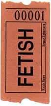
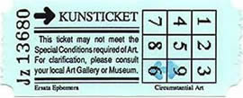

|
|
 | My
Ersatz Ephemera pieces arise from a desire to produce work that explores
graphic forms which are usually regarded as worthless. I have long been
fascinated by tickets especially. As a child I collected tickets - from
bus or railway trips, from holidays, from the putting green in the local
park. I recall that some boys prized tickets whose digits added up to twenty-one,
but my interest was more basic, quite fetishistic in nature - I liked the
smell and feel of the paper. Tickets were beautifully designed objects possessing
a magical simplicity of line and shape, they were exciting minimalist
forms, yet no-one seemed to notice their importance.
My Fetish ticket is a statement of fundamental attraction. Sometimes I copy original layouts; the Kunsticket for instance is loosely based on a Hungarian bus ticket sent to me by a mailartist. Often the design is a combination of elements from different sources. Always I replace the original meanings with those of my own, the Kunsticket begs the old question, 'but is it Art?' After drawing out roughs in pen or pencil, most pieces are created on an Apple Macintosh computer. I print out monochrome designs on a laserprinter and photocopy the sheets onto appropriate paper or card, sometimes adding elements from rubber stamps. Colour designs are printed on an ink jet printer. |
|||||||||||||||||||||||||||||||||||||||
|  | |||||||||||||||||||||||||||||||||||||||||